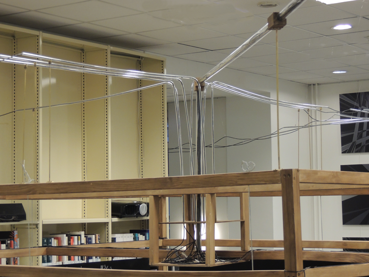

<div class='container'>
    <div id="works">
        <div class="row">
            <div class="col-9">
                <div class="content-container">
                    <h2>INMERSIÓN  DEL INSTITUTO IHP EN EL ESPACIO R3/Z3</h2>
                    <p>con <a href="https://vincentmartial.com" target="blank">Vincent Martial</a> y <a href="https://webusers.imj-prg.fr/~pierre.berger/" target="blank">Pierre Berger</a> - <a href="http://esthetopies.ihp.fr/" target="blank">Esthétopies</a></p>
                    <p>Micrófonos de contacto, transductores, pizarras</p>
                    <p>2017</p>
                    <br>
                    <br>
                    <p><i>Inmersión</i> es una instalación in-situ que realiza en tiempo real que sumerge el Instituto Henri Poincaré en el espacio matemático R3/Z3.  Alrededor de 60 micrófonos de contacto son posados en escaleras, ventilaciones u otros para grabar las vibraciones del instituto, que son luego procesadas matemática e informáticamente, para simular el sonido que se escucharía si todo el edificio se encontrase sumergido en R3/Z3. Finalmente, el sonido es reproducido por transductores para hacer vibrar pizarras de difusión y producir el sonido imaginado. </p>
                    <br>
                    <br>
                    <audio controls loop='true' class="audio_player" preload="auto" type="audio/wav">
                        <source src="../sounds/Plongement-Esthetopies-Instal.wav"/>
                    </audio>                                                            
                    <p>Captación sonido</p>   
                    <p><a href="https://elpais.com/elpais/2018/03/21/ciencia/1521654950_962716.html" target="blank">Artículo en El País</a></p>
                    <p><a href="https://www.youtube.com/watch?v=i4ACgF2hJjA&feature=youtu.be" target="blank">Video documental [subtítulos en español en opciones youtube]</a></p>
                    <br>
                    
                    
                    
                    
                    
                    
                    
                </div>
            </div>
        </div>
    </div>
</div>
